Engineering review of heart-recording.rf.npz.rf.npz, recorded September 9, 2026 at 09:58 local. 956 sweeps, 48 elements, 8020 samples per element, 25.53 seconds. All processing here replayed the existing file; no physical acquisition or programming occurred.
No convincing chamber detail was recovered. The alternatives change brightness and grain, but do not establish that useful deeper cardiac structure was captured. The user's observation of mostly faint speckle matches these reconstructions. This report does not interpret heart health.
Additional capture context: the user was moving the probe slightly to find a view and reports that ribs sometimes blocked the deep signal. Motion and acoustic shadowing are therefore major confounders. The RF does not isolate an electronics fault or prove that gain alone will help. The system is currently off; the user will make the next recordings manually.
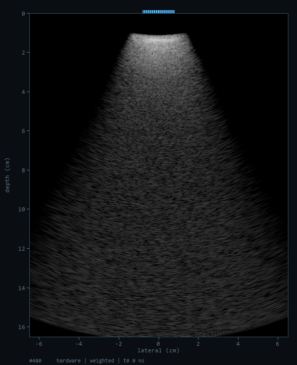
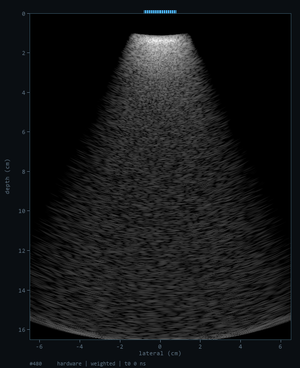
| Check | Result | Implication |
|---|---|---|
| RF integrity | 956 / 956 complete sweeps; RF SHA-256 and ZIP CRC verified | No structural data loss found. |
| ADC clipping | 7 samples, frames 27-29, about 14 mm | Widespread clipping does not explain the faint image. |
| Analog TGC | 1600 at both ends of the window | The capture used flat gain with depth. |
| Deep RF, 2-5 MHz | 8-12 cm: approximately 0.35 ADC count RMS; quiet pair approximately 0.32 | Very little amplitude margin above the quiet-channel comparison. |
| Sequential aperture | 26.64 ms commanded for 48 elements | Motion sensitivity remains a possible additional limit. |
Depth statistics use 64 evenly spaced sweeps and a fourth-order Butterworth analysis filter. They are median per-channel RMS values, not beamformed SNR. Channels 25 and 46 are a quiet comparison, not a calibrated noise-only measurement for every other channel. Range assumes 1540 m/s and the saved delay; it is not an anatomical depth assignment.
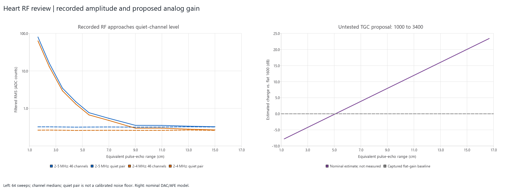
First verify the receive-gain ramp on the water bench. Then compare the baseline against TGC 1000 to 3400, keeping the waveform, voltage, timing, band, coherence setting and display identical. This lowers shallow gain and raises deeper gain before digitization. It can help if ADC/downstream noise is limiting; it also amplifies front-end noise and cannot compensate for a poor acoustic window or missing echoes.
In the TFM host, choose new live run, then load settings... to load an acquisition preset. Loading leaves PULSER RUN off. Recorded RF retains its original analog gain: loading a new acquisition preset cannot change old samples. In file replay, the review alternative can be set directly with band center 3 MHz, bandwidth 2 MHz, dynamic range 80 dB and gain +30 dB.
For the user's next manual comparison, find a clear acoustic window and hold the probe still while recording each setting from the same position. A single frame is useful; a short stationary clip allows persistence and noise checks. Success is repeatable structure above background, not merely a brighter image. Save RF from both conditions and check clipping across all frames, depth-resolved power, and noise measured on connected channels under matched conditions. If increased analog gain only lifts noise, investigate coupling/window and probe/mux/protection/front-end sensitivity before further image cosmetics.
Keep coherence weighting off and averaging at one sweep for that comparison. The existing FPGA supports a linear TGC ramp, so no new firmware is required for this test. Faster sequential acquisition or motion compensation is a later experiment; the earlier short-gap water trial lost elements, so simply reducing the current gap is not validated. Motion during synthetic aperture acquisition can degrade focusing (primary motion-compensation study); this file does not isolate that effect from low SNR.
25 renders, including multiple frames, display/band changes, coherence weighting, frequency compounding, matched filtering, two-sweep averaging, apodization and central-aperture subsets. The wire-specific metrics saved by the harness are not valid tissue-contrast scores and were not used to rank this capture. Subset brightness also changes with normalization. Image captions saying “hardware” refer to the original recording source, not a new hardware run; “weighted” is the renderer mode label and the baseline CF exponent is zero.
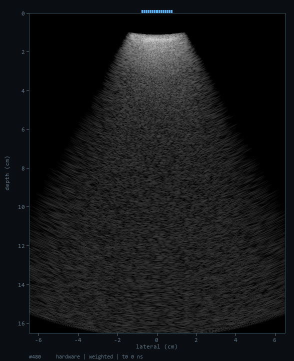
{"beamformer": {"apod": 0.5}}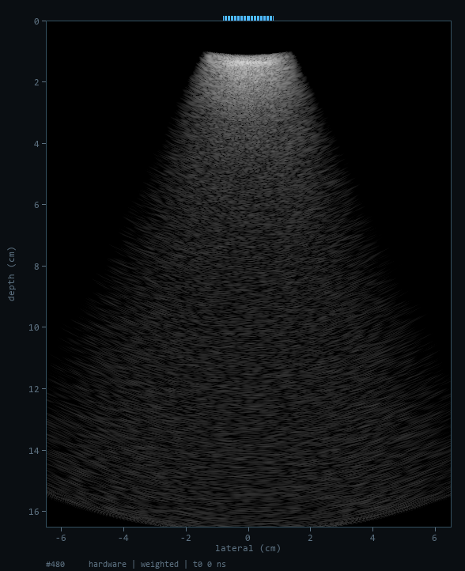
{"receive": {"avg_sweeps": 2}}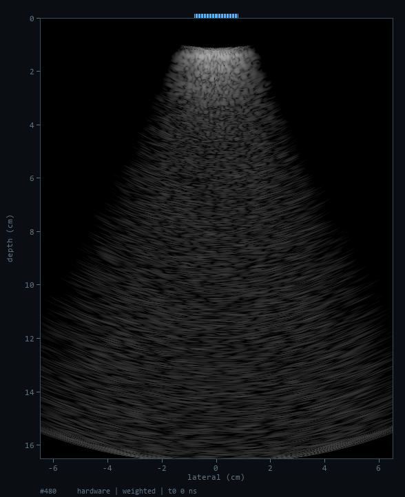
{"receive": {"band_bw_mhz": 2, "band_f0_mhz": 2}}{"receive": {"band_bw_mhz": 2, "band_f0_mhz": 2.5}}{"receive": {"band_bw_mhz": 5, "band_f0_mhz": 4}}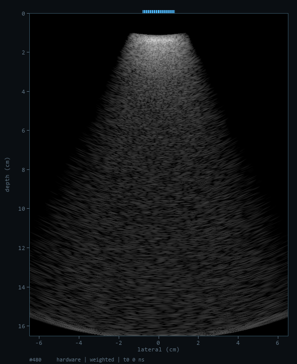
{"receive": {"band_bw_mhz": 2, "band_f0_mhz": 3}}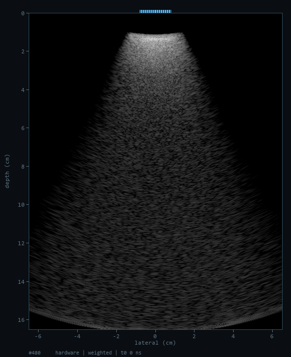
{"receive": {"band_bw_mhz": 2, "band_f0_mhz": 4}}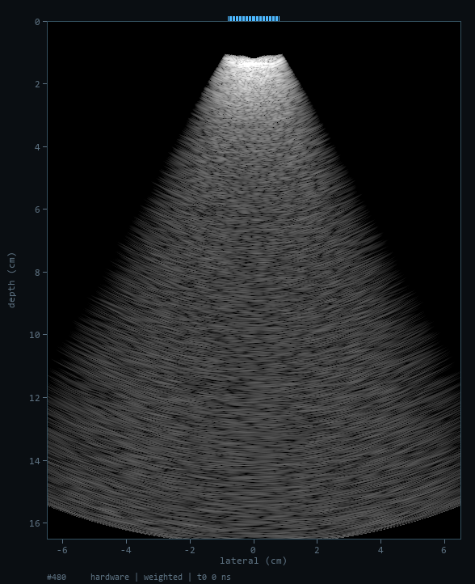
{"beamformer": {"dead": [0, 1, 2, 3, 4, 5, 6, 7, 8, 9, 10, 11, 12, 13, 14, 15, 25, 32, 33, 34, 35, 36, 37, 38, 39, 40, 41, 42, 43, 44, 45, 46, 47]}, "display": {"dyn_db": 80, "gain_db": 30}}{"beamformer": {"dead": [0, 1, 2, 3, 4, 5, 6, 7, 8, 9, 10, 11, 25, 36, 37, 38, 39, 40, 41, 42, 43, 44, 45, 46, 47]}, "display": {"dyn_db": 80, "gain_db": 30}}{"beamformer": {"cf": 0.05}}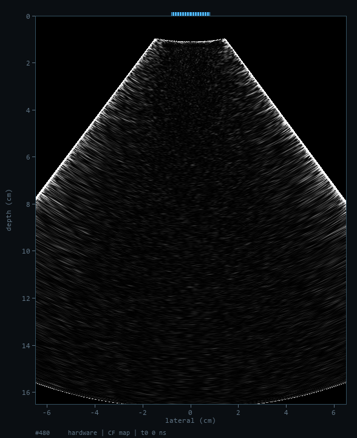
{"display": {"debug_view": 2}}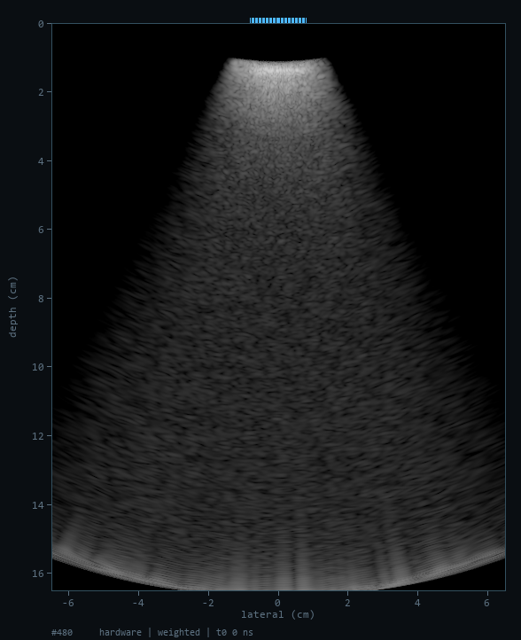
{"receive": {"frequency_compounding": true}}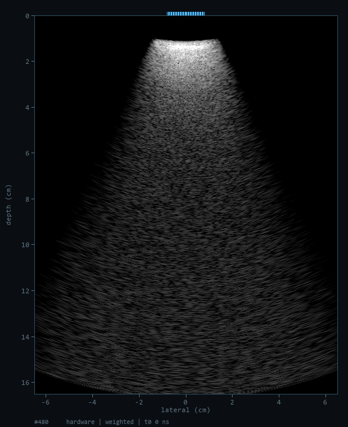
{"display": {"dyn_db": 65, "gain_db": 40}}{"display": {"dyn_db": 75, "gain_db": 35}}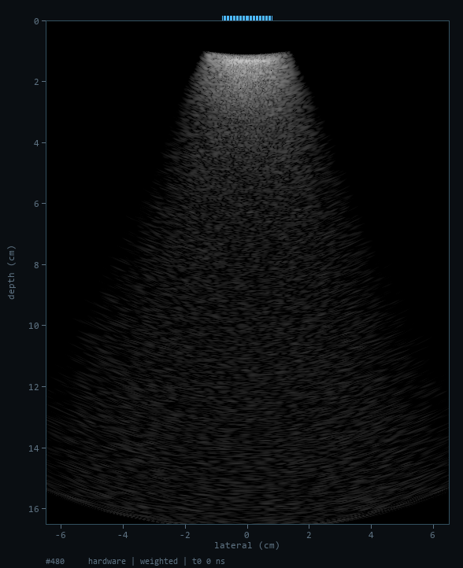
{"receive": {"matched_filter": true}}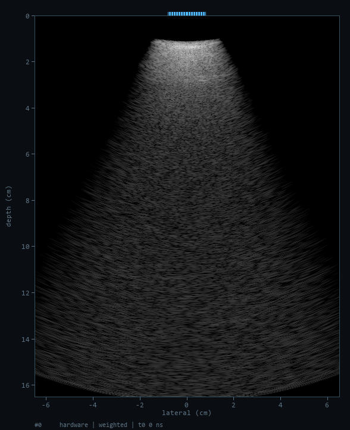
{}{}{}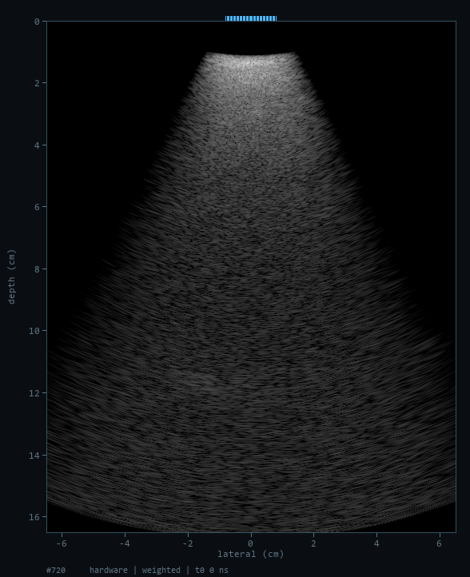
{}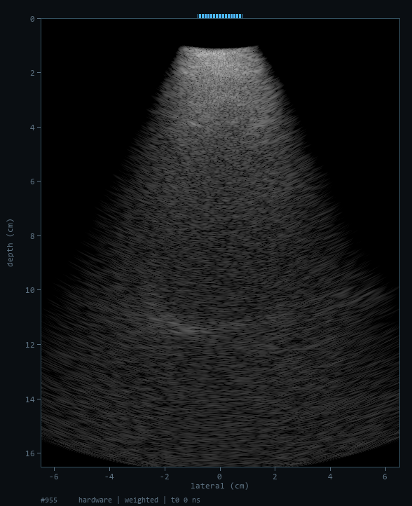
{}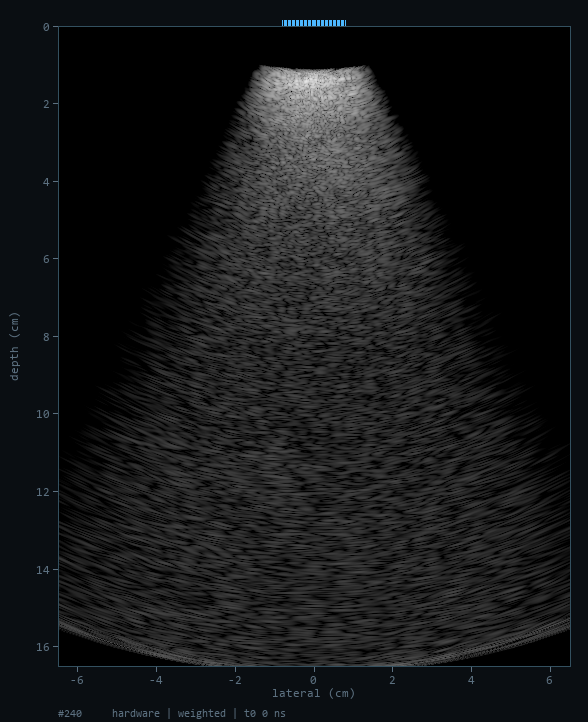
{"display": {"dyn_db": 80, "gain_db": 30}, "receive": {"band_bw_mhz": 2, "band_f0_mhz": 3}}{"display": {"dyn_db": 80, "gain_db": 30}, "receive": {"band_bw_mhz": 2, "band_f0_mhz": 3}}{"display": {"dyn_db": 80, "gain_db": 30}, "receive": {"band_bw_mhz": 2, "band_f0_mhz": 3}}{"display": {"dyn_db": 80, "gain_db": 30}, "receive": {"band_bw_mhz": 2, "band_f0_mhz": 3}}{"beamformer": {"dead": [2, 3, 6, 7, 18, 19, 22, 23, 25, 46]}}Depth/band measurements and RF hash · Temporal statistics and clipping locations · Detailed notes and test sequence
Manual capture metadata does not identify the running bitstream through hardware readback. The saved chirp is enabled; the fixed-burst cycle/width fields do not shorten the chirp in the current RTL. The commanded reference lasts 1.04 microseconds; this is not a measurement of the emitted acoustic pulse. Historical water/wire metadata is not a description of the heart acquisition.
The host loader was updated to read ordinary RF archives through a read-only memory map, avoiding another 737 MB disk copy. Complete RF checksum/CRC checks remain enabled. The bench startup also handles immediate Windows PID reuse. The 52 host tests passed without hardware.